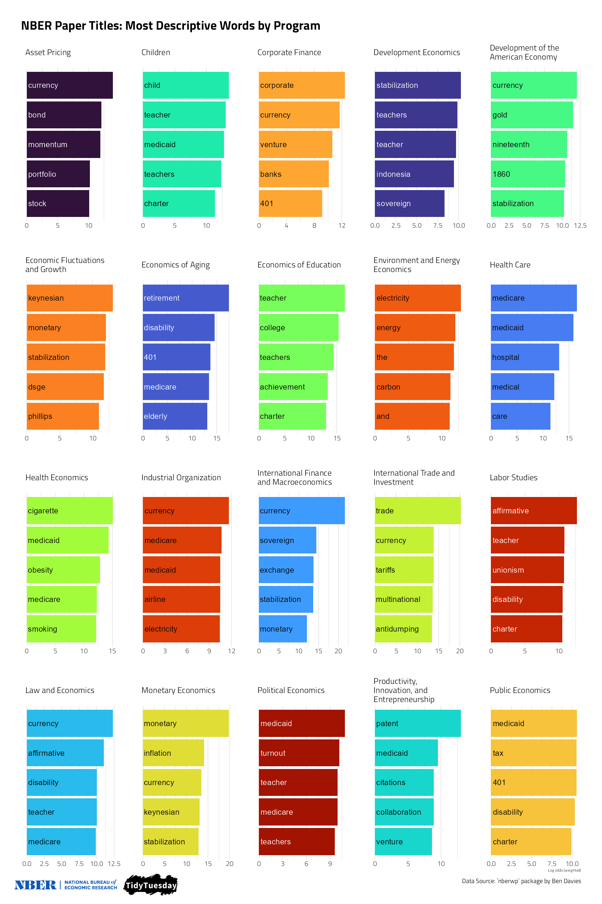
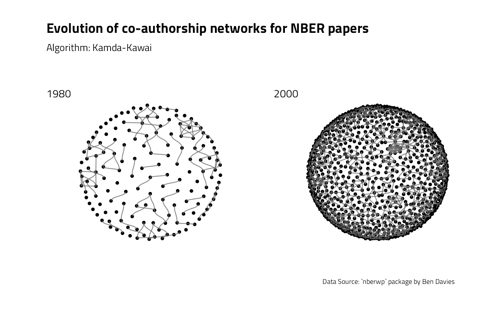

National Bureau of Economic Research working papers
Jim Gruman
September 30, 2021
Last updated: 2021-10-03
Checks: 7 0
Knit directory: myTidyTuesday/
This reproducible R Markdown analysis was created with workflowr (version 1.6.2). The Checks tab describes the reproducibility checks that were applied when the results were created. The Past versions tab lists the development history.
Great! Since the R Markdown file has been committed to the Git repository, you know the exact version of the code that produced these results.
Great job! The global environment was empty. Objects defined in the global environment can affect the analysis in your R Markdown file in unknown ways. For reproduciblity it’s best to always run the code in an empty environment.
The command set.seed(20210907) was run prior to running the code in the R Markdown file. Setting a seed ensures that any results that rely on randomness, e.g. subsampling or permutations, are reproducible.
Great job! Recording the operating system, R version, and package versions is critical for reproducibility.
Nice! There were no cached chunks for this analysis, so you can be confident that you successfully produced the results during this run.
Great job! Using relative paths to the files within your workflowr project makes it easier to run your code on other machines.
Great! You are using Git for version control. Tracking code development and connecting the code version to the results is critical for reproducibility.
The results in this page were generated with repository version d6b0274. See the Past versions tab to see a history of the changes made to the R Markdown and HTML files.
Note that you need to be careful to ensure that all relevant files for the analysis have been committed to Git prior to generating the results (you can use wflow_publish or wflow_git_commit). workflowr only checks the R Markdown file, but you know if there are other scripts or data files that it depends on. Below is the status of the Git repository when the results were generated:
Ignored files:
Ignored: .Rhistory
Ignored: .Rproj.user/
Ignored: catboost_info/
Ignored: data/2021-09-08/
Ignored: data/CNHI_Excel_Chart.xlsx
Ignored: data/CommunityTreemap.jpeg
Ignored: data/Community_Roles.jpeg
Ignored: data/YammerDigitalDataScienceMembership.xlsx
Ignored: data/acs_poverty.rds
Ignored: data/fmhpi.rds
Ignored: data/grainstocks.rds
Ignored: data/hike_data.rds
Ignored: data/nber_rs.rmd
Ignored: data/us_states.rds
Ignored: data/us_states_hexgrid.geojson
Ignored: data/weatherstats_toronto_daily.csv
Untracked files:
Untracked: code/YammerReach.R
Untracked: code/nber_job.R
Untracked: code/work list batch targets.R
Unstaged changes:
Modified: code/_common.R
Note that any generated files, e.g. HTML, png, CSS, etc., are not included in this status report because it is ok for generated content to have uncommitted changes.
These are the previous versions of the repository in which changes were made to the R Markdown (analysis/2021_09_28_NBERpapers.Rmd) and HTML (docs/2021_09_28_NBERpapers.html) files. If you’ve configured a remote Git repository (see ?wflow_git_remote), click on the hyperlinks in the table below to view the files as they were in that past version.
| File | Version | Author | Date | Message |
|---|---|---|---|---|
| Rmd | d6b0274 | opus1993 | 2021-10-03 | attempting alt text in the new knitr engine |
| html | 83a6c48 | opus1993 | 2021-10-03 | Build site. |
| Rmd | becd96c | opus1993 | 2021-10-03 | drop the plotly chart in favor of static ggplot |
| html | c2084af | opus1993 | 2021-10-02 | Build site. |
| Rmd | f64fb40 | opus1993 | 2021-10-02 | initial commit |
The #TidyTuesday data sets this week come from the National Bureau of Economic Research NBER by way of the nberwp package by Ben Davies.

Ben also has a detailed blogpost looking at this data, and NBER discusses the history of the organization here here.
My plan here is to learn something about the documents in the set and explore some R package functionality. Let’s load up R packages:
suppressPackageStartupMessages({
library(tidyverse) # clean and transform rectangular data
library(treemapify)
library(tidytext)
library(tidylo)
library(tidygraph)
library(ggraph)
library(igraph)
library(patchwork)
library(tidymodels) # machine learning tools
library(textrecipes)
library(finetune) # racing methods for accelerating hyperparameter tuning
library(themis) # ml prep tools for handling unbalanced datasets
library(plotly)
})
source(here::here("code","_common.R"),
verbose = FALSE,
local = knitr::knit_global())
theme_set(theme_jim(base_size = 14))papers <-
readr::read_csv(
"https://raw.githubusercontent.com/rfordatascience/tidytuesday/master/data/2021/2021-09-28/papers.csv"
)
programs <-
readr::read_csv(
"https://raw.githubusercontent.com/rfordatascience/tidytuesday/master/data/2021/2021-09-28/programs.csv"
)
paper_authors <-
readr::read_csv(
"https://raw.githubusercontent.com/rfordatascience/tidytuesday/master/data/2021/2021-09-28/paper_authors.csv"
)
paper_programs <-
readr::read_csv(
"https://raw.githubusercontent.com/rfordatascience/tidytuesday/master/data/2021/2021-09-28/paper_programs.csv"
)Let’s start by joining up these datasets to find the info we need. The papers are grouped into twenty one programs so let’s train a multiclass predictive model to better understand them. I am going to choose to omit the technical working papers.
papers_joined <-
paper_programs %>%
left_join(programs) %>%
left_join(papers) %>%
filter(!is.na(program_desc)) %>%
mutate(pub_date = lubridate::ym(paste(year, "-", month))) %>%
distinct(paper, pub_date, title, program_desc, program_category) %>%
filter(
program_desc != "Technical Working Papers",
!is.na(pub_date),
!is.na(title),
!is.na(program_desc)
) %>%
mutate(program_desc = factor(program_desc))
papers_joined %>%
count(program_desc, sort = TRUE)The data are not balanced, so we will investigate strategies for finding features that work accordingly.
First, though, let’s explore the data with some visuals. Julia Silge’s approach to text modeling often goes down a path of exploring the log odds uniqueness of works within the document categories. Let’s try her approach, found here.
#| fig.width: 7
#| fig.asp: 1
#| fig.align: "center"
#| out.width: "80%"
#| fig.cap: "NBER Data Source: `nberwp` package by Ben Davies"
#| fig.alt: >
#| A faceted bar plot showing the relationships between
#| words found in National Bureau of Economics Research
#| papers titles and the programs that the papers were
#| submitted into, using counts and log odds to find
#| those that are most distinctively associated
title_log_odds <-
papers_joined %>%
unnest_tokens(word, title) %>%
filter(!is.na(program_desc)) %>%
count(program_desc, word, sort = TRUE) %>%
bind_log_odds(program_desc, word, n)
title_log_odds %>%
group_by(program_desc) %>%
slice_max(log_odds_weighted, n = 5) %>%
ungroup() %>%
mutate(word = reorder_within(word, log_odds_weighted, program_desc)) %>%
ggplot(aes(log_odds_weighted,
word,
fill = program_desc
)) +
geom_col(show.legend = FALSE) +
scale_y_reordered() +
geom_text(aes(
label = str_extract(word, "[:alnum:]*"),
color = after_scale(prismatic::clr_desaturate(prismatic::clr_negate(fill), 0.5))
),
x = 0,
size = rel(5),
hjust = 0,
nudge_x = 40
) +
scale_fill_manual(values = viridis::viridis_pal(option = "H")(21)[c(1, 8, 15, 2, 9, 16, 3, 10, 17, 4, 11, 18, 5, 12, 19, 6, 13, 20, 7, 14, 21)]) +
facet_wrap(vars(program_desc),
scales = "free",
labeller = label_wrap_gen()
) +
labs(
x = "Log odds (weighted)", y = NULL,
title = "NBER Paper Titles Most Descriptive Words by Program",
caption = "Data Source: `nberwp` package by Ben Davies"
) +
theme_jim(base_size = 10) +
theme(
panel.grid.major.y = element_blank(),
axis.title.y = element_blank(),
axis.text.y = element_blank()
)
With this many categorical variables, lets take a look at counts in a treemap:
papers_joined %>%
group_by(program_desc, program_category) %>%
summarise(
n = n(),
last_paper = last(pub_date),
.groups = "drop"
) %>%
slice_max(order_by = n, n = 60) %>%
ggplot(aes(
area = n,
fill = last_paper,
label = program_desc,
subgroup = program_category
)) +
geom_treemap() +
geom_treemap_subgroup_border() +
geom_treemap_text(
color = "black",
place = "top",
reflow = TRUE
) +
geom_treemap_subgroup_text(
color = "white",
place = "bottomleft",
fontface = "italic",
min.size = 0,
alpha = 0.7
) +
scale_fill_viridis_c(option = "H") +
labs(
fill = NULL, title = "National Bureau of Economic Research Papers",
subtitle = "Three primary program categories cover 20 programs. The area corresponds to the number of papers of each in the dataset.",
caption = "Data Source: Ben Davies {nberwp}"
) +
theme(legend.position = "none")
We could create a co-authorship network graphic straight from the paper_authors table that makes the link between the papers and their authors.
To speed up the process of plotting every year, let’s build a function:
ggraph_theme <- theme_jim(base_size = 12) +
theme(
legend.position = "none",
axis.title = element_blank(),
axis.text = element_blank(),
panel.grid = element_blank(),
panel.grid.major = element_blank(),
)
fun_net <- function(yr) {
paper_authors_year <- paper_authors %>%
left_join(papers) %>%
filter(year == yr)
edges_list <- paper_authors_year %>%
mutate(author_id = as.integer(as.factor(author)))
edges_list <- edges_list %>%
left_join(edges_list, by = "paper") %>%
count(author_id.x, author_id.y) %>%
mutate(
max = pmax(author_id.x, author_id.y),
min = pmin(author_id.x, author_id.y)
) %>%
unite(check, c(min, max), remove = FALSE) %>%
distinct(check, .keep_all = TRUE) %>%
mutate(n = case_when(
(author_id.x == author_id.y) ~ 0L,
TRUE ~ n
)) %>%
rename(
from = author_id.x,
to = author_id.y
) %>%
select(from, to, n)
network <- as_tbl_graph(edges_list, directed = FALSE)
return(network)
}plot80 <- ggraph(
graph = fun_net(1980),
layout = "kk"
) +
geom_node_point() +
geom_edge_diagonal(color = "dimgrey", alpha = 0.8) +
ggraph_theme
plot00 <- ggraph(
graph = fun_net(2000),
layout = "kk"
) +
geom_node_point() +
geom_edge_diagonal(color = "dimgrey", alpha = 0.8) +
ggraph_theme
layout <- c(
area(
t = 1,
l = 1,
b = 4,
r = 2
),
area(
t = 1,
l = 3,
b = 4,
r = 4
)
)
plot80 + plot00 +
plot_layout(design = layout) +
plot_annotation(
title = "Evolution of co-authorship networks for NBER papers",
subtitle = "Algorithm: Kamda-Kawai",
caption = "Data Source: `nberwp` package by Ben Davies",
tag_levels = list(c("1980", "2000"))
)
What can be done to further annotate the visual with metrics? In network analysis, the most common metric for each node is degree, that is the number of connections for each node.
net80 <- fun_net(1980) %>%
activate(edges) %>%
mutate(weights = case_when(
# Solo-authored set to weight=0
n == 0 ~ 0,
# Weight = 1 for all others collaborations
TRUE ~ 1
)) %>%
# Now activate nodes
activate(nodes) %>%
# Compute degree for each node
mutate(deg = centrality_degree(weights = weights)) %>%
# Find author with most collaboration
# (highest-degree node)
mutate(max_deg = max(deg)) %>%
mutate(max_author = case_when(
deg == max_deg ~ 1,
TRUE ~ 0
))
# Same steps for year 2000
net00 <- fun_net(2000) %>%
activate(edges) %>%
mutate(weights = case_when(
n == 0 ~ 0,
TRUE ~ 1
)) %>%
activate(nodes) %>%
mutate(deg = centrality_degree(weights = weights)) %>%
mutate(max_deg = max(deg)) %>%
mutate(max_author = case_when(
deg == max_deg ~ 1,
TRUE ~ 0
))We may now calculate the average degree for each network.
stat_deg_80 <- net80 %>%
activate(nodes) %>%
as_tibble() %>%
summarise(
year = "1980",
mean_deg = mean(deg),
max_deg = mean(max_deg)
)
stat_deg_00 <- net00 %>%
activate(nodes) %>%
as_tibble() %>%
summarise(
year = "2000",
mean_deg = mean(deg),
max_deg = mean(max_deg)
)
bind_rows(stat_deg_80, stat_deg_00)The number of connection is increasing between 1980 and 2000. For papers published in 2000, each author collaborated on average with approximately two other authors.
We may now add these information to the plots.
p80 <- ggraph(net80,
layout = "kk"
) +
geom_node_point(aes(col = deg, size = max_author)) +
geom_edge_diagonal(color = "dimgrey", alpha = 0.8) +
scale_color_viridis_b(option = "H") +
guides(size = "none", color = "none") +
ggraph_theme
p00 <- ggraph(net00,
layout = "kk"
) +
geom_node_point(aes(col = deg, size = max_author)) +
guides(size = "none") +
labs(color = "Degree") +
scale_color_viridis_b(option = "H") +
geom_edge_diagonal(color = "dimgrey", alpha = 0.8) +
ggraph_theme
p80 + p00 +
plot_layout(
design = layout,
guides = "collect"
) +
plot_annotation(
title = "Evolution of co-authorship networks for NBER papers",
subtitle = "Largest points show node with maximum degree. Algorithm: Kamda-Kawai",
caption = "Data Source: `nberwp` package by Ben Davies",
tag_levels = list(c("1980", "2000"))
)
More metrics regarding these networks are described in Ben Davies’ blog post.
Ben Nowak’s superb complete network diagram submission:
tweetrmd::include_tweet("https://twitter.com/BjnNowak/status/1442807060396134408")For this week #TidyTuesday : evolution of co-authorship networks for @nberpubs publications.#RStats code here: https://t.co/42jqOPbo3q pic.twitter.com/8WDkFYbPDv
— Benjamin Nowak (@BjnNowak) September 28, 2021
The types of relationships, as inferences, between program and title words are what we want to discover more about in our predictive model.
Build and Tune a Model
Let’s start our modeling by setting up our “data budget.” We’ll stratify by our outcome program_desc.
nber_split <- initial_split(papers_joined,
strata = program_desc
)
nber_train <- training(nber_split)
nber_test <- testing(nber_split)
set.seed(2021)
nber_folds <- vfold_cv(nber_train, strata = program_desc)Next, let’s set up feature engineering. We will need to transform our text data into features useful for our model by tokenizing and computing either term frequency or tf-idf. Let’s also upsample since our dataset is imbalanced, with many more of some of the categories than others.
nber_rec_tfidf <-
recipe(program_desc ~ title + pub_date,
data = nber_train
) %>%
step_tokenize(title) %>%
step_stem(title) %>%
step_ngram(title, num_tokens = 3) %>%
step_tokenfilter(title, max_tokens = 200) %>%
step_tfidf(title) %>%
step_date(pub_date,
features = c("month", "year"),
keep_original_cols = FALSE
) %>%
step_dummy(all_nominal_predictors()) %>%
step_upsample(program_desc) %>%
step_zv(all_predictors())Then, let’s create our model specification for a lasso model. We need to use a model specification that can handle multiclass data, in this case multinom_reg().
multi_spec <-
multinom_reg(
penalty = tune(),
mixture = 1
) %>%
set_mode("classification") %>%
set_engine("glmnet")Since the lasso regularization penalty is a hyperparameter of the model (we can’t find the best value from fitting the model a single time), let’s tune over a grid of possible penalty parameters.
nber_grid <- grid_regular(penalty(range = c(-5, 0)),
levels = 16
)To speed things up, we will use all but one of the computer’s cores.
ctrl <- control_race(
parallel_over = "everything",
save_pred = TRUE
)
all_cores <- parallelly::availableCores(omit = 1)
all_cores
future::plan("multisession", workers = all_cores) # on WindowsTidymodels will model every penalty parameter over the first couple of folds, but will begin to drop values unlikely to perform to save processing time.
nber_wf <-
workflow(nber_rec_tfidf, multi_spec)
nber_rs <-
nber_wf %>%
tune_grid(
resamples = nber_folds,
verbose = TRUE,
metric = metric_set(roc_aunu),
grid = nber_grid
)How did it turn out?
autoplot(nber_rs)
(final_penalty <- select_by_one_std_err(nber_rs,
metric = "roc_auc",
desc(penalty)
))final_rs <-
nber_wf %>%
finalize_workflow(final_penalty) %>%
last_fit(nber_split)
final_rsHow did our final model perform on the training data?
collect_metrics(final_rs)We can visualize the difference in performance across classes with a confusion matrix.
collect_predictions(final_rs) %>%
conf_mat(program_desc, .pred_class) %>%
autoplot() +
theme_jim(base_size = 12) +
theme(axis.text.x = element_blank()) +
labs(title = "NBER Classification Confusion Matrix on Training")
We can also visualize the ROC curves for each class.
collect_predictions(final_rs) %>%
roc_curve(
truth = program_desc,
`.pred_Asset Pricing`:`.pred_Public Economics`
) %>%
ggplot(aes(1 - specificity, sensitivity, color = .level)) +
geom_abline(
slope = 1,
color = "gray50",
lty = 2,
alpha = 0.8
) +
geom_path(size = 1.5, alpha = 0.7) +
scale_color_manual(values = viridis::viridis_pal(option = "H")(21)[c(1, 8, 15, 2, 9, 16, 3, 10, 17, 4, 11, 18, 5, 12, 19, 6, 13, 20, 7, 14, 21)]) +
labs(color = NULL) +
coord_fixed() +
labs(title = "ROC better for Development Economics than most others")
Finally, we can extract (and save, if we like) the fitted workflow from our results to use for predicting on new data.
For paper w0456, Sterilization and Offsetting Capital Movements: Evidence from West Germany, 1960-1970, the model makes the following prediction probabilities:
final_fitted <- extract_workflow(final_rs)
## can save this for prediction later with readr::write_rds()
predict(final_fitted, nber_test[85, ], type = "prob") %>%
pivot_longer(cols = everything()) %>%
arrange(desc(value))The test data’s correct answer (truth) is International Finance and Macroeconomics
sessionInfo()R version 4.1.1 (2021-08-10)
Platform: x86_64-w64-mingw32/x64 (64-bit)
Running under: Windows 10 x64 (build 22000)
Matrix products: default
locale:
[1] LC_COLLATE=English_United States.1252
[2] LC_CTYPE=English_United States.1252
[3] LC_MONETARY=English_United States.1252
[4] LC_NUMERIC=C
[5] LC_TIME=English_United States.1252
attached base packages:
[1] stats graphics grDevices utils datasets methods base
other attached packages:
[1] glmnet_4.1-2 Matrix_1.3-4 vctrs_0.3.8 rlang_0.4.11
[5] SnowballC_0.7.0 plotly_4.9.4.1 themis_0.1.4 finetune_0.1.0
[9] textrecipes_0.4.1 yardstick_0.0.8 workflowsets_0.1.0 workflows_0.2.3
[13] tune_0.1.6 rsample_0.1.0 recipes_0.1.17 parsnip_0.1.7.900
[17] modeldata_0.1.1 infer_1.0.0 dials_0.0.10 scales_1.1.1
[21] broom_0.7.9 tidymodels_0.1.3 patchwork_1.1.1 igraph_1.2.6
[25] ggraph_2.0.5 tidygraph_1.2.0 tidylo_0.1.0 tidytext_0.3.1
[29] treemapify_2.5.5 forcats_0.5.1 stringr_1.4.0 dplyr_1.0.7
[33] purrr_0.3.4 readr_2.0.2 tidyr_1.1.4 tibble_3.1.4
[37] ggplot2_3.3.5 tidyverse_1.3.1 workflowr_1.6.2
loaded via a namespace (and not attached):
[1] utf8_1.2.2 R.utils_2.11.0 tidyselect_1.1.1
[4] htmlwidgets_1.5.4 grid_4.1.1 pROC_1.18.0
[7] munsell_0.5.0 codetools_0.2-18 ragg_1.1.3
[10] future_1.22.1 withr_2.4.2 colorspace_2.0-2
[13] highr_0.9 knitr_1.36 rstudioapi_0.13
[16] Rttf2pt1_1.3.9 listenv_0.8.0 labeling_0.4.2
[19] git2r_0.28.0 polyclip_1.10-0 bit64_4.0.5
[22] DiceDesign_1.9 farver_2.1.0 rprojroot_2.0.2
[25] mlr_2.19.0 parallelly_1.28.1 generics_0.1.0
[28] ipred_0.9-12 xfun_0.26 R6_2.5.1
[31] doParallel_1.0.16 graphlayouts_0.7.1 lhs_1.1.3
[34] cachem_1.0.6 assertthat_0.2.1 vroom_1.5.5
[37] promises_1.2.0.1 nnet_7.3-16 gtable_0.3.0
[40] globals_0.14.0 timeDate_3043.102 BBmisc_1.11
[43] systemfonts_1.0.2 splines_4.1.1 extrafontdb_1.0
[46] lazyeval_0.2.2 prismatic_1.0.0 checkmate_2.0.0
[49] yaml_2.2.1 modelr_0.1.8 backports_1.2.1
[52] httpuv_1.6.3 tokenizers_0.2.1 extrafont_0.17
[55] tools_4.1.1 lava_1.6.10 ellipsis_0.3.2
[58] jquerylib_0.1.4 Rcpp_1.0.7 plyr_1.8.6
[61] parallelMap_1.5.1 rpart_4.1-15 ParamHelpers_1.14
[64] viridis_0.6.1 haven_2.4.3 ggrepel_0.9.1
[67] hrbrthemes_0.8.0 fs_1.5.0 here_1.0.1
[70] furrr_0.2.3 unbalanced_2.0 magrittr_2.0.1
[73] data.table_1.14.2 reprex_2.0.1 RANN_2.6.1
[76] GPfit_1.0-8 whisker_0.4 ROSE_0.0-4
[79] R.cache_0.15.0 hms_1.1.1 evaluate_0.14
[82] readxl_1.3.1 shape_1.4.6 gridExtra_2.3
[85] compiler_4.1.1 crayon_1.4.1 R.oo_1.24.0
[88] htmltools_0.5.2 later_1.3.0 tzdb_0.1.2
[91] lubridate_1.7.10 DBI_1.1.1 tweenr_1.0.2
[94] dbplyr_2.1.1 MASS_7.3-54 cli_3.0.1
[97] R.methodsS3_1.8.1 parallel_4.1.1 gower_0.2.2
[100] pkgconfig_2.0.3 tweetrmd_0.0.9 xml2_1.3.2
[103] foreach_1.5.1 bslib_0.3.0 hardhat_0.1.6
[106] prodlim_2019.11.13 rvest_1.0.1 janeaustenr_0.1.5
[109] digest_0.6.27 rmarkdown_2.11 cellranger_1.1.0
[112] fastmatch_1.1-3 gdtools_0.2.3 curl_4.3.2
[115] lifecycle_1.0.1 jsonlite_1.7.2 viridisLite_0.4.0
[118] fansi_0.5.0 pillar_1.6.3 lattice_0.20-44
[121] fastmap_1.1.0 httr_1.4.2 survival_3.2-11
[124] glue_1.4.2 conflicted_1.0.4 FNN_1.1.3
[127] iterators_1.0.13 bit_4.0.4 ggforce_0.3.3
[130] class_7.3-19 stringi_1.7.4 sass_0.4.0
[133] rematch2_2.1.2 ggfittext_0.9.1 textshaping_0.3.5
[136] styler_1.6.2 future.apply_1.8.1